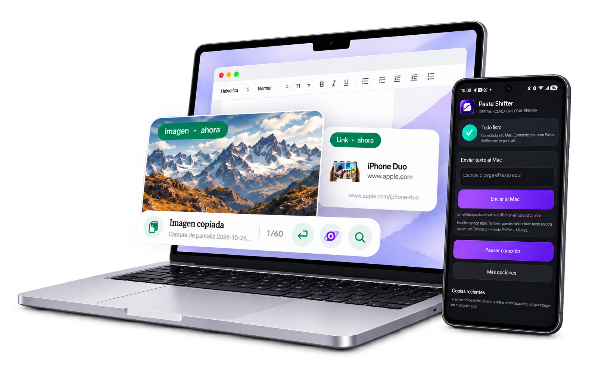

Imagen · ahora
Inspiración para lo que viene
Imagen copiada
Lo copiaste por algo. Vuelve a encontrarlo.
Texto, imágenes y enlaces en tu Mac.
Y ahora, tu Android también entra en órbita.
Diseñado para Mac · macOS 13 o posterior

DE COPIAR A SEGUIR CREANDO
Tu portapapeles puede hacer más que recordar la última copia. Recupera una imagen, retoma un enlace o vuelve a ese texto que ya tenías.
Imagen copiada
Ese enlace que querías volver a consultar.
Enlace copiado
Una frase que no quieres escribir dos veces.
Texto copiado
Ejemplo visual. Explora los tipos de contenido.
UNA IDEA MENOS INTERRUMPIDA
El widget vive cerca de lo que estás haciendo. Ábrelo, encuentra tu copia y continúa.
Las vistas previas de imágenes y enlaces te ayudan a elegir la copia correcta.
Arrastra imágenes directamente a los documentos y apps que admiten arrastrar y soltar.
Busca ese texto que ya copiaste. Selecciónalo y úsalo otra vez sin escribirlo de nuevo.
PRESENTAMOS ORBITAL
Un texto en el teléfono. Una idea en el Mac.
Conéctalos sin enviarte mensajes a ti mismo.
Conectado a tu Mac.
Un pequeño ejemplo de lo que puedes hacer con Orbital.
Comparte el texto desde Android y recupéralo en tu Mac para usarlo donde lo necesitas.
Demostración visual: este ejemplo no conecta dispositivos ni accede a tu portapapeles.
Escanea desde la app Android el código que muestra tu Mac y confirma el emparejamiento.
Envíalo desde otra app de Android o desde Paste Shifter. También puedes enviar texto del Mac al teléfono.
Recupera la copia recibida y llévala al documento, mensaje o proyecto en el que estás trabajando.
Requiere la app complementaria para Android y ambos dispositivos en la misma red Wi-Fi. Orbital comparte texto.
CADA COPIA, A TU MANERA
Cuatro espacios para decidir qué usas, qué separas y qué prefieres guardar.
TU DÍA A DÍA
Texto e imágenes para volver a lo que copiaste y mantener el ritmo.
UN HISTORIAL APARTE
Separa tus copias de las habituales en un espacio independiente.
SOLO POR UN MOMENTO
Una copia temporal que se elimina después de 60 segundos.
TÚ ELIGES QUÉ GUARDAR
Guarda textos con cifrado local. Desbloquea con Touch ID o tu contraseña.
TUS COPIAS. TUS DECISIONES.
Tu historial se procesa en tu Mac. Con Orbital, el texto viaja directamente entre tus dispositivos emparejados. Tú decides qué compartir.
Conoce cómo cuidamos tus datos ↗ANTES DE TU PRIMERA COPIA
No. El historial de texto e imágenes funciona en tu Mac. Android es opcional y te permite compartir texto mediante Orbital.
Orbital comparte texto entre Mac y Android. Las imágenes y capturas del historial visual se usan en tu Mac.
Normal, Fantasma y las imágenes se mantienen temporalmente en memoria y desaparecen al cerrar la app. Los textos que guardas en Privado permanecen cifrados localmente hasta que los borras.
Un Mac con macOS 13 o posterior. Para pegar directamente desde el widget en otras apps, concede el permiso de Accesibilidad. Para Orbital, instala también la app Android y conecta ambos dispositivos a la misma red Wi-Fi.
TU PRÓXIMA IDEA YA ESTÁ EN MARCHA
Dale continuidad a tus ideas con Paste Shifter.
Comprar en la App Store ↗Para Mac · macOS 13 o posterior